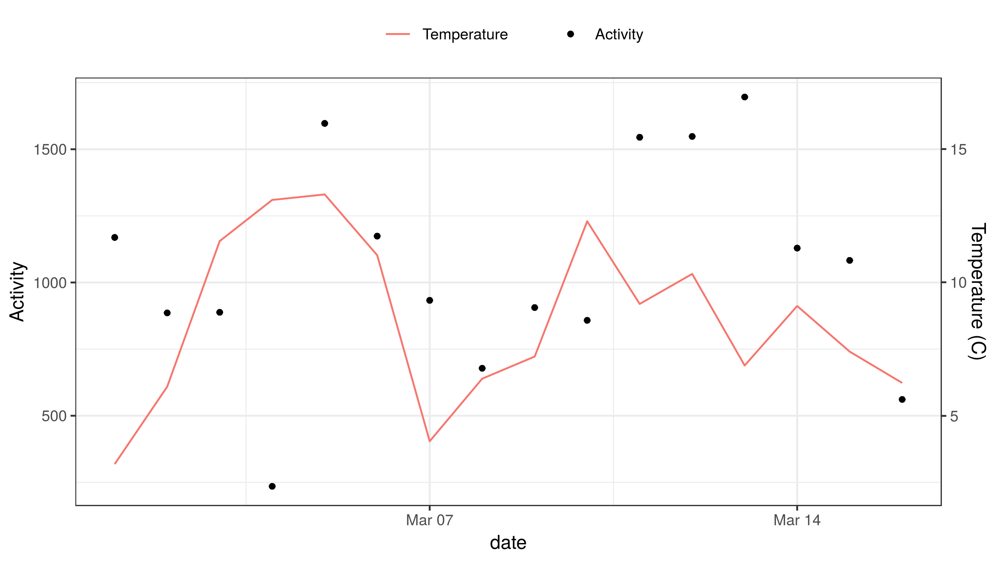

Packages
You’ll need several packages from the tidyverse in addition to weathercan to complete the following analysis.
General usage
You can merge weather data with other data frames by linearly interpolating between points.
For example, here we have a dataset of weather data from Kamloops
## Observations: 4,368
## Variables: 35
## $ station_name <chr> "KAMLOOPS A", "KAMLOOPS A", "KAMLOOPS A", "KAMLOOPS …
## $ station_id <dbl> 51423, 51423, 51423, 51423, 51423, 51423, 51423, 514…
## $ station_operator <lgl> NA, NA, NA, NA, NA, NA, NA, NA, NA, NA, NA, NA, NA, …
## $ prov <chr> "BC", "BC", "BC", "BC", "BC", "BC", "BC", "BC", "BC"…
## $ lat <dbl> 50.7, 50.7, 50.7, 50.7, 50.7, 50.7, 50.7, 50.7, 50.7…
## $ lon <dbl> -120.45, -120.45, -120.45, -120.45, -120.45, -120.45…
## $ elev <dbl> 345.3, 345.3, 345.3, 345.3, 345.3, 345.3, 345.3, 345…
## $ climate_id <chr> "1163781", "1163781", "1163781", "1163781", "1163781…
## $ WMO_id <chr> "71887", "71887", "71887", "71887", "71887", "71887"…
## $ TC_id <chr> "YKA", "YKA", "YKA", "YKA", "YKA", "YKA", "YKA", "YK…
## $ date <date> 2016-01-01, 2016-01-01, 2016-01-01, 2016-01-01, 201…
## $ time <dttm> 2016-01-01 00:00:00, 2016-01-01 01:00:00, 2016-01-0…
## $ year <chr> "2016", "2016", "2016", "2016", "2016", "2016", "201…
## $ month <chr> "01", "01", "01", "01", "01", "01", "01", "01", "01"…
## $ day <chr> "01", "01", "01", "01", "01", "01", "01", "01", "01"…
## $ hour <chr> "00:00", "01:00", "02:00", "03:00", "04:00", "05:00"…
## $ weather <chr> NA, "Mostly Cloudy", NA, NA, "Cloudy", NA, NA, "Clou…
## $ hmdx <dbl> NA, NA, NA, NA, NA, NA, NA, NA, NA, NA, NA, NA, NA, …
## $ hmdx_flag <chr> "", "", "", "", "", "", "", "", "", "", "", "", "", …
## $ pressure <dbl> 99.95, 99.93, 99.92, 99.90, 99.86, 99.82, 99.80, 99.…
## $ pressure_flag <chr> "", "", "", "", "", "", "", "", "", "", "", "", "", …
## $ rel_hum <dbl> 74, 76, 74, 73, 70, 71, 69, 69, 71, 71, 71, 70, 69, …
## $ rel_hum_flag <chr> "", "", "", "", "", "", "", "", "", "", "", "", "", …
## $ temp <dbl> -9.1, -9.6, -9.9, -9.5, -9.4, -9.8, -10.0, -10.2, -1…
## $ temp_dew <dbl> -12.9, -13.1, -13.7, -13.5, -13.9, -14.1, -14.7, -14…
## $ temp_dew_flag <chr> "", "", "", "", "", "", "", "", "", "", "", "", "", …
## $ temp_flag <chr> "", "", "", "", "", "", "", "", "", "", "", "", "", …
## $ visib <dbl> 64.4, 64.4, 64.4, 64.4, 64.4, 64.4, 64.4, 64.4, 48.3…
## $ visib_flag <chr> "", "", "", "", "", "", "", "", "", "", "", "", "", …
## $ wind_chill <dbl> -17, -17, -18, -17, -17, -17, -18, -17, -17, -16, -1…
## $ wind_chill_flag <chr> "", "", "", "", "", "", "", "", "", "", "", "", "", …
## $ wind_dir <dbl> 13, 11, 11, 11, 11, 10, 9, 7, 7, 10, 11, 10, 10, 13,…
## $ wind_dir_flag <chr> "", "", "", "", "", "", "", "", "", "", "", "", "", …
## $ wind_spd <dbl> 19, 20, 20, 18, 18, 16, 23, 15, 14, 15, 12, 11, 12, …
## $ wind_spd_flag <chr> "", "", "", "", "", "", "", "", "", "", "", "", "", …As well as a data set of finch visits to an RFID feeder
## Observations: 16,886
## Variables: 10
## $ animal_id <fct> 041868FF93, 041868FF93, 041868FF93, 06200003BB, 06200003BB,…
## $ date <date> 2016-03-01, 2016-03-01, 2016-03-01, 2016-03-01, 2016-03-01…
## $ time <dttm> 2016-03-01 06:57:42, 2016-03-01 06:58:41, 2016-03-01 07:07…
## $ logger_id <fct> 2300, 2300, 2300, 2400, 2400, 2400, 2400, 2400, 2300, 2300,…
## $ species <chr> "Mountain Chickadee", "Mountain Chickadee", "Mountain Chick…
## $ age <chr> "AHY", "AHY", "AHY", "SY", "SY", "SY", "SY", "SY", "AHY", "…
## $ sex <chr> "U", "U", "U", "M", "M", "M", "M", "M", "F", "F", "F", "F",…
## $ site_name <chr> "Kamloops, BC", "Kamloops, BC", "Kamloops, BC", "Kamloops, …
## $ lon <dbl> -120.3622, -120.3622, -120.3622, -120.3635, -120.3635, -120…
## $ lat <dbl> 50.66967, 50.66967, 50.66967, 50.66938, 50.66938, 50.66938,…Although the times in the weather data do not exactly match those in the finch data, we can merge them together through linear interpolation. This function uses the approx function from the stats package under the hood.
Here we specify that we only want the temperature (temp) column:
## temp is missing 4 out of 4368 data, interpolation may be less accurate as a result.## animal_id date time
## 0620000513:7624 Min. :2016-03-01 Min. :2016-03-01 06:57:42
## 041868D861:2767 1st Qu.:2016-03-05 1st Qu.:2016-03-05 13:54:13
## 0620000514:1844 Median :2016-03-09 Median :2016-03-09 16:54:47
## 06200004F8:1386 Mean :2016-03-08 Mean :2016-03-09 07:45:58
## 041868BED6: 944 3rd Qu.:2016-03-13 3rd Qu.:2016-03-13 08:24:58
## 06200003BB: 708 Max. :2016-03-16 Max. :2016-03-16 16:39:30
## (Other) :1613
## logger_id species age sex
## 1500:6370 Length:16886 Length:16886 Length:16886
## 2100: 968 Class :character Class :character Class :character
## 2200:2266 Mode :character Mode :character Mode :character
## 2300:3531
## 2400:1477
## 2700:2274
##
## site_name lon lat temp
## Length:16886 Min. :-120.4 Min. :50.67 Min. :-0.2317
## Class :character 1st Qu.:-120.4 1st Qu.:50.67 1st Qu.: 5.0561
## Mode :character Median :-120.4 Median :50.67 Median : 7.1651
## Mean :-120.4 Mean :50.67 Mean : 7.4349
## 3rd Qu.:-120.4 3rd Qu.:50.67 3rd Qu.: 9.3319
## Max. :-120.4 Max. :50.67 Max. :16.3712
## ## Observations: 16,886
## Variables: 11
## $ animal_id <fct> 041868FF93, 041868FF93, 041868FF93, 06200003BB, 06200003BB,…
## $ date <date> 2016-03-01, 2016-03-01, 2016-03-01, 2016-03-01, 2016-03-01…
## $ time <dttm> 2016-03-01 06:57:42, 2016-03-01 06:58:41, 2016-03-01 07:07…
## $ logger_id <fct> 2300, 2300, 2300, 2400, 2400, 2400, 2400, 2400, 2300, 2300,…
## $ species <chr> "Mountain Chickadee", "Mountain Chickadee", "Mountain Chick…
## $ age <chr> "AHY", "AHY", "AHY", "SY", "SY", "SY", "SY", "SY", "AHY", "…
## $ sex <chr> "U", "U", "U", "M", "M", "M", "M", "M", "F", "F", "F", "F",…
## $ site_name <chr> "Kamloops, BC", "Kamloops, BC", "Kamloops, BC", "Kamloops, …
## $ lon <dbl> -120.3622, -120.3622, -120.3622, -120.3635, -120.3635, -120…
## $ lat <dbl> 50.66967, 50.66967, 50.66967, 50.66938, 50.66938, 50.66938,…
## $ temp <dbl> 3.984667, 3.991222, 4.036750, 4.162833, 4.162917, 4.163000,…ggplot(data = finches_temperature, aes(x = temp, fill = animal_id)) +
theme_bw() +
theme(legend.position = "none") +
geom_histogram(binwidth = 1) +
labs(x = "Temperature (C)", y = "Activity Count", fill = "Finch ID")
Or summarized:
finches_temperature <- finches_temperature %>%
group_by(date) %>%
summarize(n = length(time),
temp = mean(temp))
ggplot(data = finches_temperature, aes(x = date, y = n)) +
theme_bw() +
theme(legend.position = "top") +
geom_point(aes(shape = "Activity")) +
geom_line(aes(y = temp * 100, colour = "Temperature")) +
scale_colour_discrete(name = "") +
scale_shape_discrete(name = "") +
scale_y_continuous(name = "Activity", sec.axis = sec_axis(~. / 100, name = "Temperature (C)"))
Data gaps
By default, gaps of 2 hours (or 2 days, with a daily scale) will be interpolated over (i.e. they will be filled with values interpolated from either side of the gap), but longer gaps will be skipped and filled with NAs. You can adjust this behaviour with na_gap. Note that as Environment and Climate Change Canada data is downloaded on an hourly scale, it makes no sense to apply na_gap values of less than 1.
In this example, note the larger number of NAs in temp and how it corresponds to the missing variables in the weather dataset:
finches_temperature <- weather_interp(data = finches, weather = kamloops,
cols = "temp", na_gap = 1)## temp is missing 4 out of 4368 data, interpolation may be less accurate as a result.## animal_id date time
## 0620000513:7624 Min. :2016-03-01 Min. :2016-03-01 06:57:42
## 041868D861:2767 1st Qu.:2016-03-05 1st Qu.:2016-03-05 13:54:13
## 0620000514:1844 Median :2016-03-09 Median :2016-03-09 16:54:47
## 06200004F8:1386 Mean :2016-03-08 Mean :2016-03-09 07:45:58
## 041868BED6: 944 3rd Qu.:2016-03-13 3rd Qu.:2016-03-13 08:24:58
## 06200003BB: 708 Max. :2016-03-16 Max. :2016-03-16 16:39:30
## (Other) :1613
## logger_id species age sex
## 1500:6370 Length:16886 Length:16886 Length:16886
## 2100: 968 Class :character Class :character Class :character
## 2200:2266 Mode :character Mode :character Mode :character
## 2300:3531
## 2400:1477
## 2700:2274
##
## site_name lon lat temp
## Length:16886 Min. :-120.4 Min. :50.67 Min. :-0.2317
## Class :character 1st Qu.:-120.4 1st Qu.:50.67 1st Qu.: 5.0746
## Mode :character Median :-120.4 Median :50.67 Median : 7.1668
## Mean :-120.4 Mean :50.67 Mean : 7.4433
## 3rd Qu.:-120.4 3rd Qu.:50.67 3rd Qu.: 9.3458
## Max. :-120.4 Max. :50.67 Max. :16.3712
## NA's :84## # A tibble: 84 x 3
## date time temp
## <date> <dttm> <dbl>
## 1 2016-03-10 2016-03-10 16:00:12 NA
## 2 2016-03-10 2016-03-10 16:00:33 NA
## 3 2016-03-10 2016-03-10 16:00:36 NA
## 4 2016-03-10 2016-03-10 16:00:39 NA
## 5 2016-03-10 2016-03-10 16:00:42 NA
## 6 2016-03-10 2016-03-10 16:00:45 NA
## 7 2016-03-10 2016-03-10 16:00:48 NA
## 8 2016-03-10 2016-03-10 16:00:51 NA
## 9 2016-03-10 2016-03-10 16:00:54 NA
## 10 2016-03-10 2016-03-10 16:00:57 NA
## # … with 74 more rows## # A tibble: 4 x 2
## time temp
## <dttm> <dbl>
## 1 2016-02-11 19:00:00 NA
## 2 2016-03-08 13:00:00 NA
## 3 2016-03-11 01:00:00 NA
## 4 2016-04-09 00:00:00 NAMultiple weather columns
We could also add in more than one column at a time:
## temp is missing 4 out of 4368 data, interpolation may be less accurate as a result.## wind_spd is missing 4 out of 4368 data, interpolation may be less accurate as a result.## animal_id date time
## 0620000513:7624 Min. :2016-03-01 Min. :2016-03-01 06:57:42
## 041868D861:2767 1st Qu.:2016-03-05 1st Qu.:2016-03-05 13:54:13
## 0620000514:1844 Median :2016-03-09 Median :2016-03-09 16:54:47
## 06200004F8:1386 Mean :2016-03-08 Mean :2016-03-09 07:45:58
## 041868BED6: 944 3rd Qu.:2016-03-13 3rd Qu.:2016-03-13 08:24:58
## 06200003BB: 708 Max. :2016-03-16 Max. :2016-03-16 16:39:30
## (Other) :1613
## logger_id species age sex
## 1500:6370 Length:16886 Length:16886 Length:16886
## 2100: 968 Class :character Class :character Class :character
## 2200:2266 Mode :character Mode :character Mode :character
## 2300:3531
## 2400:1477
## 2700:2274
##
## site_name lon lat temp
## Length:16886 Min. :-120.4 Min. :50.67 Min. :-0.2317
## Class :character 1st Qu.:-120.4 1st Qu.:50.67 1st Qu.: 5.0561
## Mode :character Median :-120.4 Median :50.67 Median : 7.1651
## Mean :-120.4 Mean :50.67 Mean : 7.4349
## 3rd Qu.:-120.4 3rd Qu.:50.67 3rd Qu.: 9.3319
## Max. :-120.4 Max. :50.67 Max. :16.3712
##
## wind_spd
## Min. : 1.000
## 1st Qu.: 7.634
## Median :13.738
## Mean :14.443
## 3rd Qu.:19.907
## Max. :44.939
## ## Observations: 16,886
## Variables: 12
## $ animal_id <fct> 041868FF93, 041868FF93, 041868FF93, 06200003BB, 06200003BB,…
## $ date <date> 2016-03-01, 2016-03-01, 2016-03-01, 2016-03-01, 2016-03-01…
## $ time <dttm> 2016-03-01 06:57:42, 2016-03-01 06:58:41, 2016-03-01 07:07…
## $ logger_id <fct> 2300, 2300, 2300, 2400, 2400, 2400, 2400, 2400, 2300, 2300,…
## $ species <chr> "Mountain Chickadee", "Mountain Chickadee", "Mountain Chick…
## $ age <chr> "AHY", "AHY", "AHY", "SY", "SY", "SY", "SY", "SY", "AHY", "…
## $ sex <chr> "U", "U", "U", "M", "M", "M", "M", "M", "F", "F", "F", "F",…
## $ site_name <chr> "Kamloops, BC", "Kamloops, BC", "Kamloops, BC", "Kamloops, …
## $ lon <dbl> -120.3622, -120.3622, -120.3622, -120.3635, -120.3635, -120…
## $ lat <dbl> 50.66967, 50.66967, 50.66967, 50.66938, 50.66938, 50.66938,…
## $ temp <dbl> 3.984667, 3.991222, 4.036750, 4.162833, 4.162917, 4.163000,…
## $ wind_spd <dbl> 22.88500, 22.93417, 22.26500, 19.74333, 19.74167, 19.74000,…finches_weather <- finches_weather %>%
group_by(date) %>%
summarize(n = length(time),
temp = mean(temp),
wind_spd = mean(wind_spd))
ggplot(data = finches_weather, aes(x = date, y = n)) +
theme_bw() +
theme(legend.position = "top") +
geom_bar(stat = "identity") +
geom_line(aes(y = temp * 50, colour = "Temperature"), size = 2) +
geom_line(aes(y = wind_spd * 50, colour = "Wind Speed"), size = 2) +
scale_colour_discrete(name = "") +
scale_y_continuous(name = "Activity Counts", sec.axis = sec_axis(~. / 50, name = "Temperature (C) / Wind Speed (km/h)"))